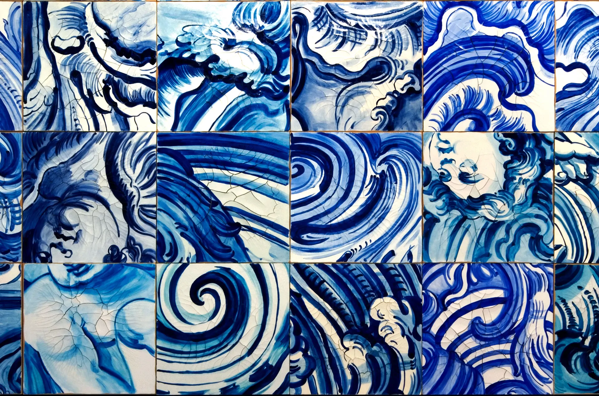
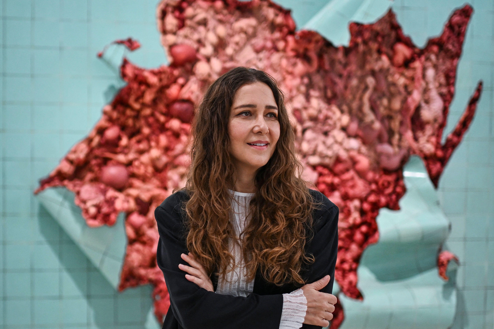
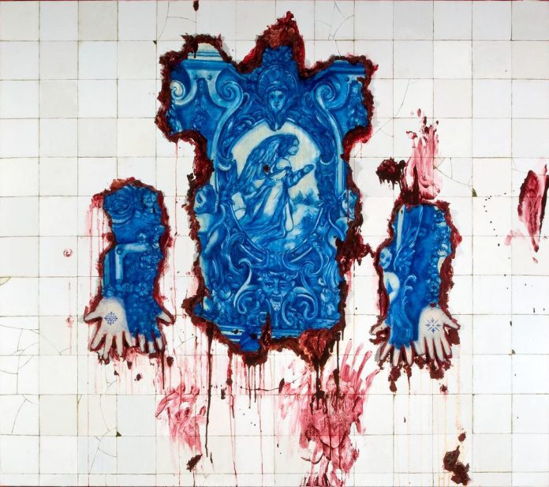
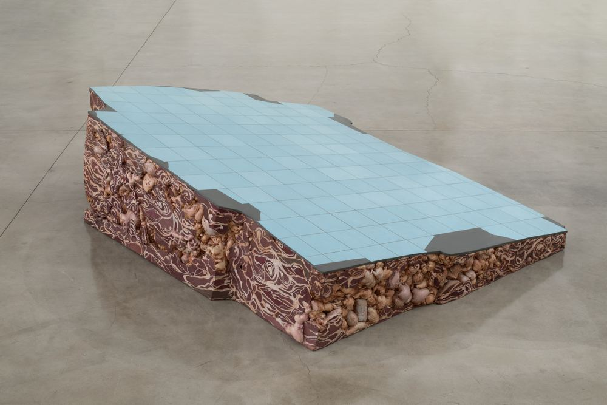
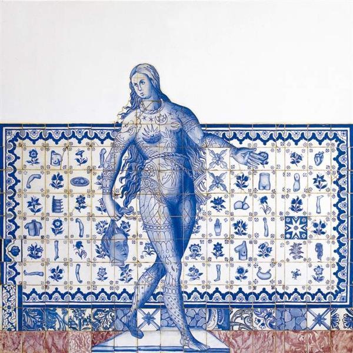

Adriana Varejão é uma das artistas plásticas contemporâneas brasileiras mais prestigiadas internacionalmente. Sua obra explora criticamente a história colonial, a violência da escravidão e a miscigenação, usando a estética barroca e a pintura tridimensional para expor o "sangue e a carne" por trás dos monumentos.
"Celacanto provoca maremoto."


